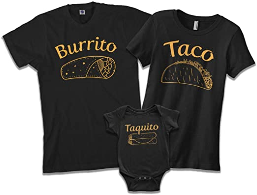
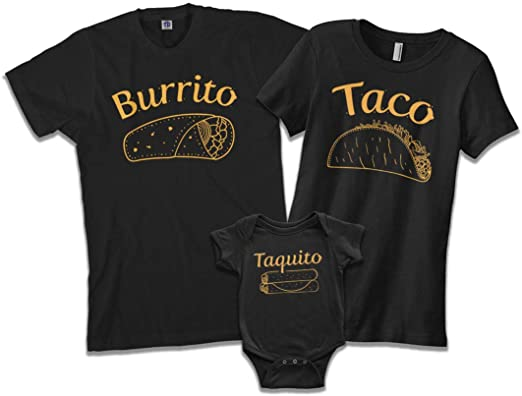

Menu Principal
 

Es el proceso de impresión de un diseño, sobre una prenda, superficie o artículo, el cual se caracteriza por sus múltiples estilos y técnicas. ... En este servicio, se tiene en cuenta la calidad de la tinta y del estampado, para evitar su caída en el desgaste del lavado y uso frecuente de la prenda.